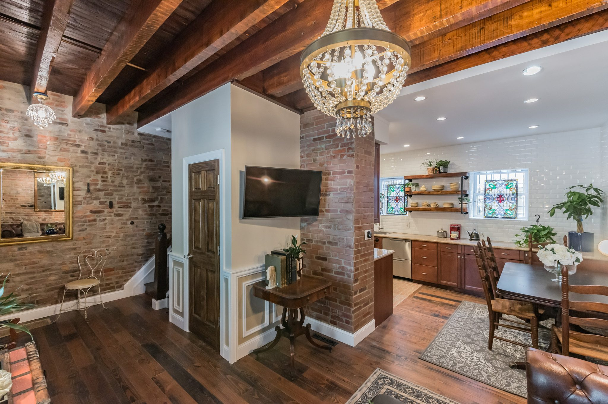
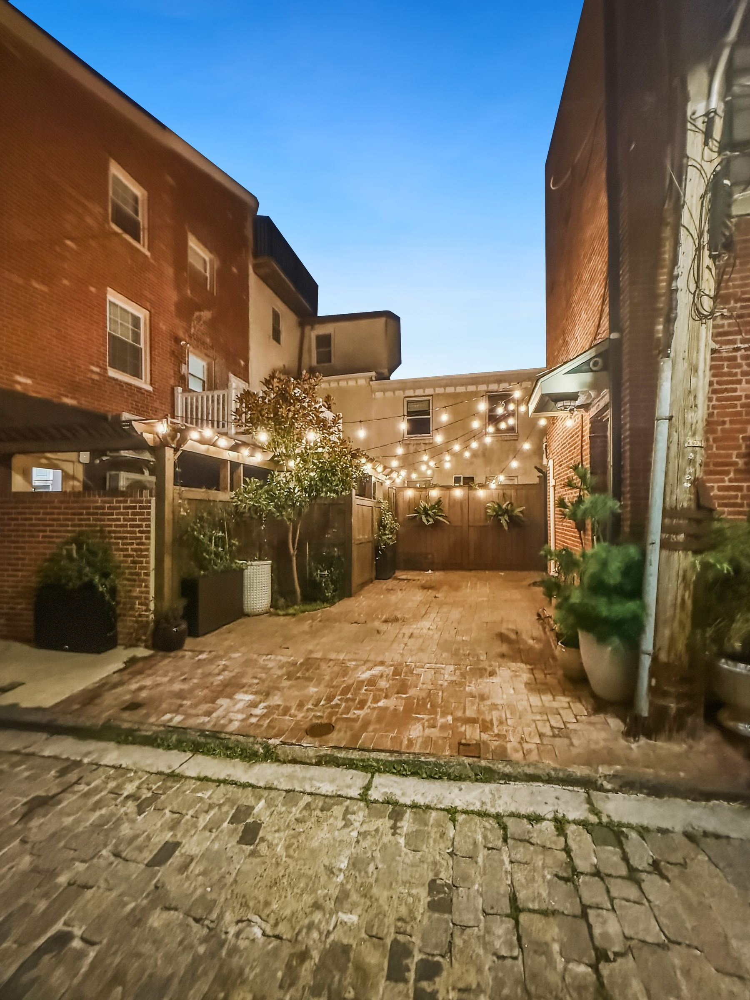
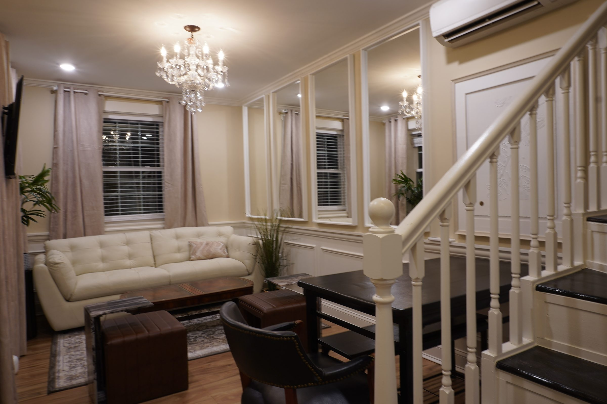

Three restored homes on the cobblestone streets of Society Hill and Queen Village.
Exposed brick and hand-hewn beams, cobblestone lanes and a fanlight at every door, restored with modern kitchens and climate control. Each is an entire house, sleeping eight to ten, within about a mile of where the nation was made.
Two for families, one for friends, and two that sit side by side for bigger groups.


Please note: these are historic homes with steep, narrow stairs and no elevator. See each house for details.
Hancock House and Catherine House are next door to each other in Queen Village. Together they sleep up to 18, depending on availability.
America's firsts, a short walk from your door.
Entire homes with full kitchens, minutes from CHOP, Penn Medicine, Jefferson, Pennsylvania Hospital and Wills Eye.
William Penn laid the city out as a grid of streets between two rivers. The blocks you walk from your door still follow that plan.
Tell us your dates and group size, or ask anything about the houses.